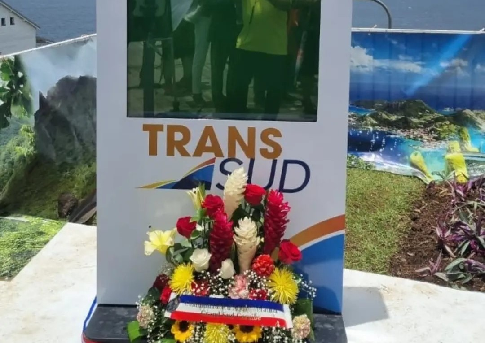
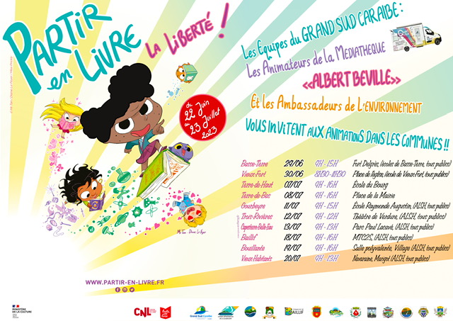

Télécharger la nouvelle application TRANS SUD
Appli actu
23-07-2023

Inauguration de la decheterie et du centre de transfert de baillif
Evèvenement
15-09-2023

La collecte en apport volontaire de la fin d'année 2023
Information
26-08-2023

Inauguration du premier totem d'informations du GSC
Evèvenement
06-08-2023

la 9eme édition de la manifestation "Partir en livre"
Activité
29-06-2023

Echange entre les équipes EPCI et les services de l'Etat
Information
20-06-2023